Phantom System - Ressucitando o Fantasma
 :::. Por Agrobel -
Tempos atrás, o Agro comentou no forum Sega Brasil, que estava
com um Phantom System morto e enterrado na caixa dele dentro do guarda
roupas, desde mil novescentos e não sei quanto. Então eu
falei, "que tal você tentar reviver o fantasma?". Tá,
não foram bem essas palavras, mas foi algo do tipo. Trocamos
umas idéias rápidas sobre como ressucitar video games, e
ele encarou o desafio. Confiram.
:::. Por Agrobel -
Tempos atrás, o Agro comentou no forum Sega Brasil, que estava
com um Phantom System morto e enterrado na caixa dele dentro do guarda
roupas, desde mil novescentos e não sei quanto. Então eu
falei, "que tal você tentar reviver o fantasma?". Tá,
não foram bem essas palavras, mas foi algo do tipo. Trocamos
umas idéias rápidas sobre como ressucitar video games, e
ele encarou o desafio. Confiram.
________________________________________________________________________________________
Fala, pessoal!
Comecei a escrever esse tópico na segunda-feira, então
considerem as citações do texto para segunda-feira.
Os
Faraós bem que tentaram, mas nunca conseguiram voltar do mundo dos
mortos. Seus corpos mumificados passaram muito tempo à espera do retorno
de suas almas, mas isso acabou nunca acontecendo, pelo menos até hoje..
hehe.
Domingo passado, eu abri um sarcófago para ajudar um colega do
fórum Sega Brasil, que precisava saber como era o esquema de pinagem
original do controle do Phantom System.
Meu Phantom System estava
dentro de seu sarcófago, falecido desde mais ou menos 1995, entre caixas
de outros consoles que estão, alguns, em pleno funcionamento, outros
não tão pleno, mas ainda em funcionamento.
A dificuldade de tirá-lo de sua tumba foi algo que exigiu uma espera de alguns dias.. Mas domingo esse dia chegou.
Aí está o sarcófago.
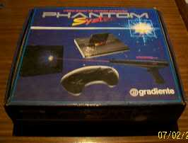
Ao abrí-lo, o corpo mumificado de meu Phantom System e seus controles. Até que ele está mais completo do que eu lembrava que estivesse, apesar de não ter fonte nem cabo RF ou AV.
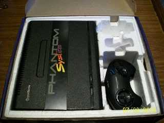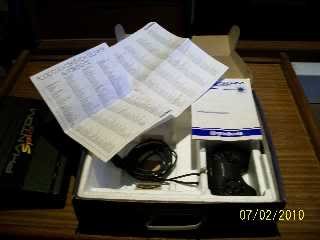
Bom, separei os controles, para fazer as devidas observações e medições. Na hora de tirar da caixa, tive uma desagradável constatação: a borracha dos cabos está meio que derretendo, o que tirou alguns daqueles mini gomos do isopor, e um pouco de tinta da contracapa do manual... Nosso amigo Corredor X já esclareceu que isso se chama vulcanização da borracha. Mas continuo tendo a impressão de que esse processo não acontecia da mesma forma que acontece hoje, sugerindo que houve alguma mudança no ar.
Com o controle aberto, anotei a nomenclatura e fiz o mapeamento da pinagem de acordo com as cores dos fios, que recebem um código na placa do controle (suas cores em inglês, exceto para o fio verde, que é indicado como W. Provavelmente o projeto original previa um fio branco no lugar do verde). Repeti o processo no segundo controle, para ter certeza da configuração.
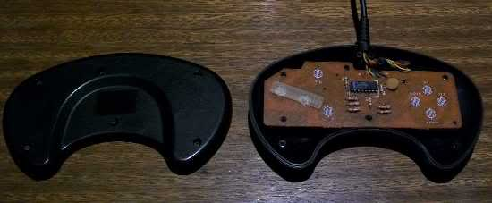
Com o controle aberto, anotei a nomenclatura e fiz o mapeamento da pinagem de acordo com as cores dos fios, que recebem um código na placa do controle (suas cores em inglês, exceto para o fio verde, que é indicado como W. Provavelmente o projeto original previa um fio branco no lugar do verde). Repeti o processo no segundo controle, para ter certeza da configuração.
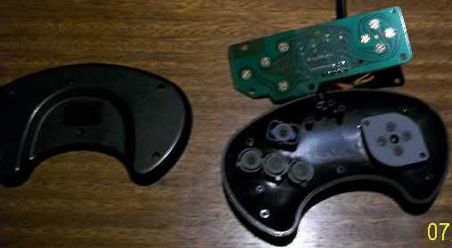
Já aproveitei para fazer uma limpeza nas placas, nas carcaças dos controles, e nos carvões que fazem os contatos, apesar de estarem em relativo bom estado. Com um pano e álcool comum 46°, fiz a limpeza dos fios. Saiu um caldinho amarelado. Preocupante. Mas ficaram bons, lisinhos, não ásperos e grudentos como estavam antes.
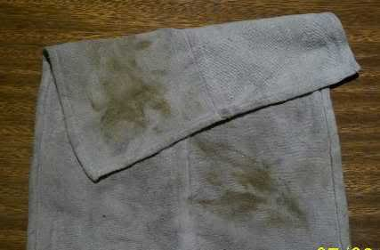
Postei as informações para o nosso colega, e mandei as fotos que ele precisava. Na segunda, pela manhã, quando fui conferir a foto que tirei no dia anterior, vi que estava muito fora de foco. Decidi tirar outra, com resolução e iluminação melhores.
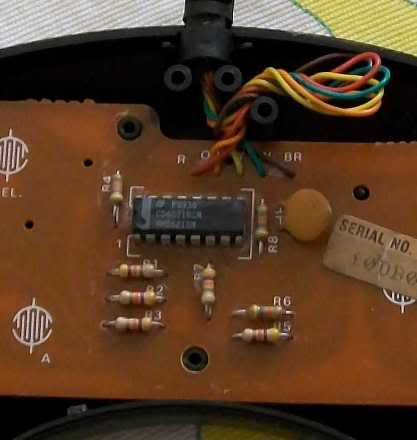
Depois de mexer com os controles, fiquei pensando no que o amigo
Gigacom sugeriu quando recuperei o Turbo Game. Ele
deu a idéia de tentar reviver a múmia. Eu já tinha tentado fazer isso
uns anos atrás, sem sucesso. Na ocasião, troquei um componente queimado,
identificado por um amigo que é técnico de laboratório de eletrônica,
na escola em que eu trabalhava, e manja de consertar coisas
eletrônicas.. hehe.
Eu mesmo fiz a troca, e o único resultado que
obtive na época foi que ele voltou a acender o LED que indica estar
ligado. Ainda na época, tentei fazê-lo funcionar com uma fonte mais do
que genérica daquelas que vc seleciona a tensão e até a polaridade. Só
que essas fontes são muito fracas, não conseguem fornecer a corrente
necessária sem uma grande perda de tensão. Essas fontes só servem para
aparelhos que consomem muito pouca energia.
Mesmo assim, fiquei com aquilo na cabeça. Já que eu
estava com a mão na massa mesmo, porque não dar uma nova
olhada na múmia? Preparei a mesa branca e trouxe o "Fantasma"
para a seção espírita! Hehe. Por fora ele
está muito bonito! Deu até dó de estar queimado.
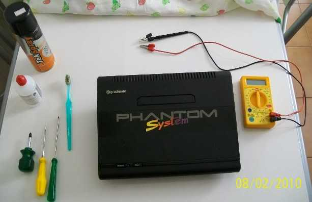
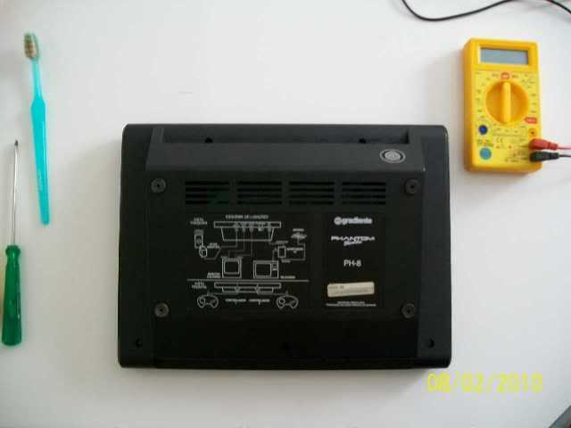
E lá estava a plaquinha. Como fiquei surpreso a primeira vez que a vi,
uns 15 anos atrás. Achei bem pequena. Hoje que conheço a placa do Turbo
Game da CCE, sei que é menor que ela, embora faça a mesma coisa, com um
pouco mais de qualidade.
O procedimento foi o padrão: primeiro fiz
alguns testes de continuidade com o multímetro, para ver se tinha algum
curto, ou alguma solda mal feita, já que na época, além de menos
prática, eu não tinha multímetro para testar. Depois dei aquela lavada
com álcool isopropílico, e mandei o spray de álcool também, nos lugares
mais difíceis de alcançar. Escovei com a escova velha, limpei com
cotonete...
Ficou
limpinha. Antes tinha umas pequenas manchas, parecia zinabe, mas tinha
bem pouco. Fiquei naquela curiosidade "Será que agora funcionaria?".
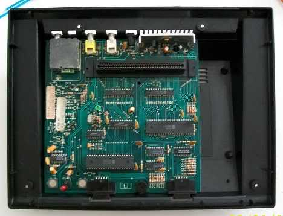
Depois de fechado, lembrei do problema da fonte. A entrada da placa para a fonte não é bem padrão. O pino central é maior que a maioria das fontes. A fonte do Mega, por exemplo, não serve apenas por esse detalhe. E eu não tenho a menor idéia de onde esteja aquela fonte multitensão vagabunda que eu tinha. Está guardada, mas não sei onde. Ô, ansiedade!
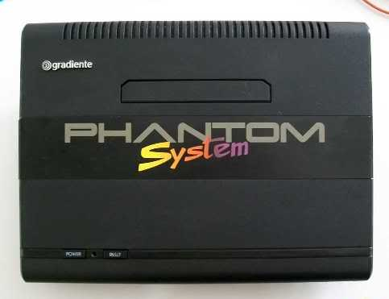
Bateu aquela indignação de estar com o console lindão e não poder nem
testar. Então resolvi procurar alguma fonte que servisse. Primeiro,
claro, tentei usar a do Mega, que é de 9V. Eu não tenho certeza se o
Phantom usa fonte de 9V, mas console com menos de 9V é difícil. Além
disso eu, sem noção em 95, usava uma fonte de 12V, e ele funcionava. Mas
a sobrecarga é que deve ter fritado o Phantom aos poucos (vai
entender..).
Nada do plugue do Mega encaixar no Phantom. Resolvi
tentar a fonte do Nes, que nunca tinha tentado antes. A tensão era de 9V
também, então pensei "Beleza, com essa tensão e uma corrente nominal de
1,3A, dá e sobra até mais que a do Mega". O encaixe foi perfeito, no
plugue, mas o Phantom não dava nenhum sinal. Nem o LED, que antes
acendia, não estava acendendo.
Fiquei preocupado. Será que tinha
queimado outra vez? Será que tinha prejudicado a fonte do Nes? Peguei o
multímetro e fui testar se estava tudo ok com a fonte do Nes. "Estranho,
tá marcando uma tensão quase zero! O que será?" O comportamento era
parecido com o que se vê quando se tenta medir uma tensão alternada em
escala para tensão contínua. Eu disse: "Será? Não pode ser!" Mas
coloquei na escala alternada para ter certeza..........
Tava lá: 10V
(em aberto). 10V alternada!!!!!!!! Aí olhei com mais atenção as
informações da fonte e estava lá "Output: AC 9V" !!!! "Meu, só a
Nintendo pra fazer uma dessa...... Agora estava tudo explicado. A fonte
do Nes provavelmente só tem transformador lá dentro. O retificador só
pode estar dentro do console.. Consequência: nada feito com a fonte de
Nes...
Comecei a pensar num jeito de fazer algum tipo de adaptador..
Como eu conseguiria fazer contato com aquele pino central? Pensei em
algum tubinho daquele diâmetro, mas nada me veio como possibilidade. Foi
aí que comecei a pensar ao contrário. Ao invés de adaptar uma fonte ao
console, adaptar o console a uma fonte. Coisa não muito fácil de fazer,
mas ou era isso, ou ficar sem saber sobre a reencarnação do Phantasma.
Abri
o Phantom denovo, e comecei a estudar o conector da fonte. Os
componentes sugeriam que o pino central era o pólo negativo, e a chapa
do contato externo o pólo positivo. Peguei um par de fios rígidos com
garras jacaré, que costumo usar para testes, e fiz uma conexão às pernas
de dois componentes diretamente ligados aos conectores. Prendi bem os
fios para evitar xabú, e tchanam! Agora meu Phantom System tinha o
conector mais universal do mundo! hehe
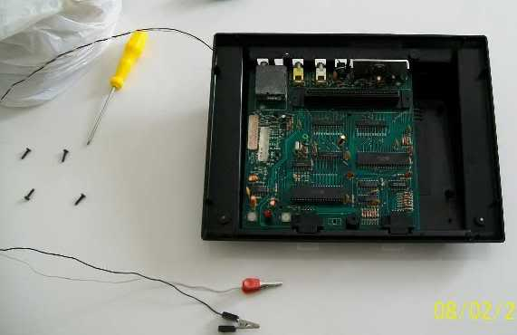
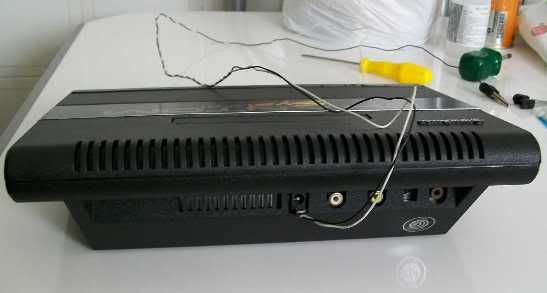
A gambiarra das gambiarras.. hehehe. Bom, já que eu estava me aprofundando na improvização, porque não fazer uma fonte? Assim eu poderia medir a tensão e a corrente mesmo durante o uso. Preparativos finais para o teste.
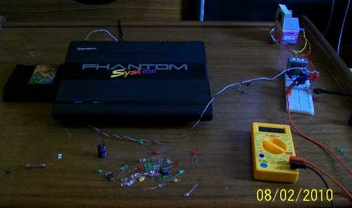
Primeiro teste: tela azul! Oh oh.. Tela azul?? Isso aqui não é Windows!! Não me lembrava de tela azul quando não pegava cartucho. Estava receoso, mas arrisquei mais um pouco, recolocando o cartucho (adivinhem qual...). Pelo menos o LED estava aceso. De repente..... UAU!!!!!!!!!!!!! Eu não achei que ele voltaria a funcionar depois de 15 anos parado!!! Valeu, GIGA!!!!!!
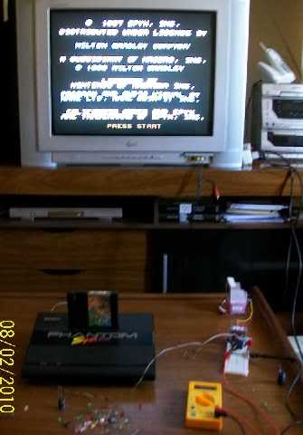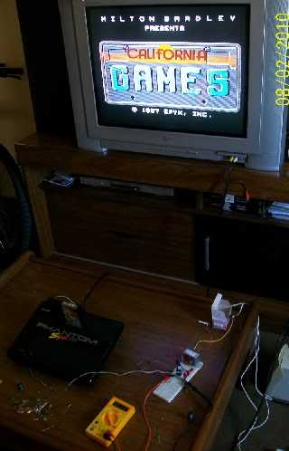
Fiquei muito contente mesmo, parecia o resultado de um vestibular!!!! Me senti poderoso!! Hehe. Eu poderia controlar a natureza!! haha! Claro que eu não podia deixar de lado o jogo que me fez comprar esse Phantom... Era inacreditável rever essa imagem, gerada por esse console. Aliás, tive a impressão de que a imagem é mais nítida e mais colorida do que no Turbo Game, que por sua vez é mais colorida que no próprio Nes Playtronic. O som do Phantom também é menos ardido do que no VG 9000T.
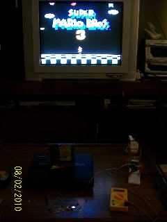
Bom, foi isso. Fiquei muito feliz! Hehehe.. Viva a água benta, digo, o isopropílico! hehe.